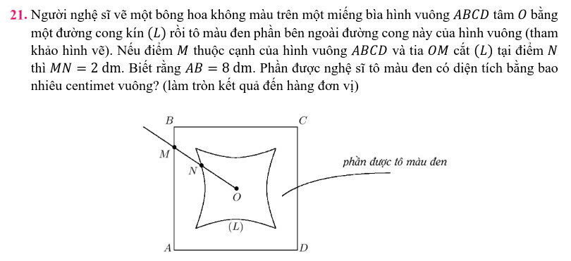
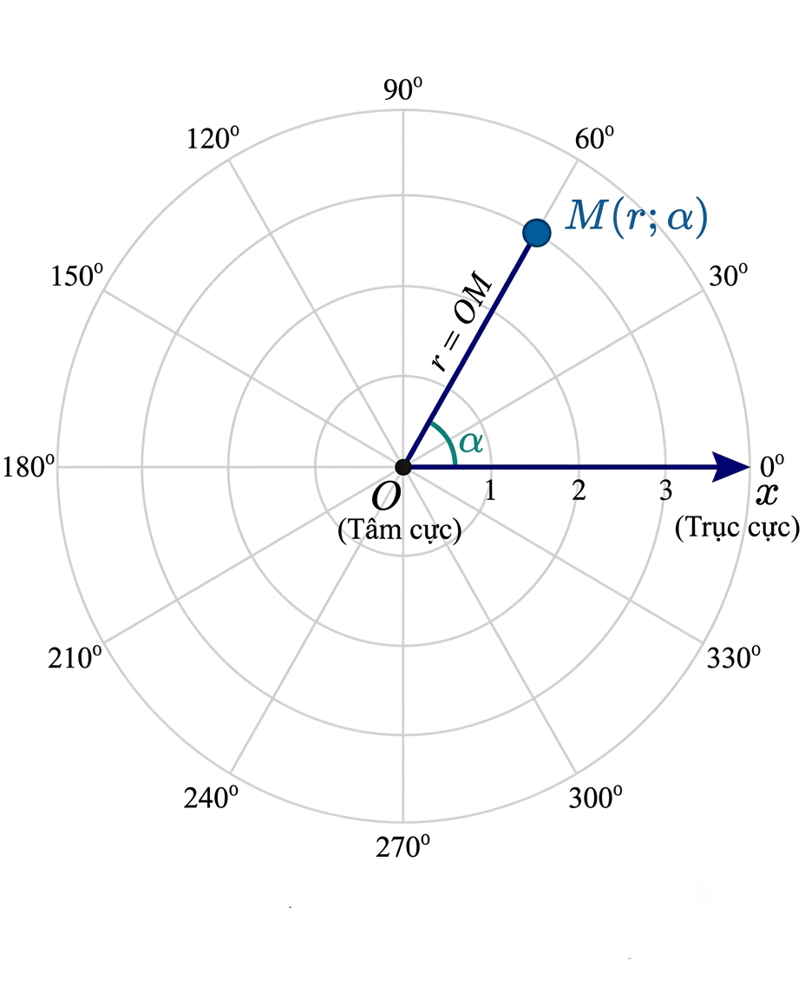
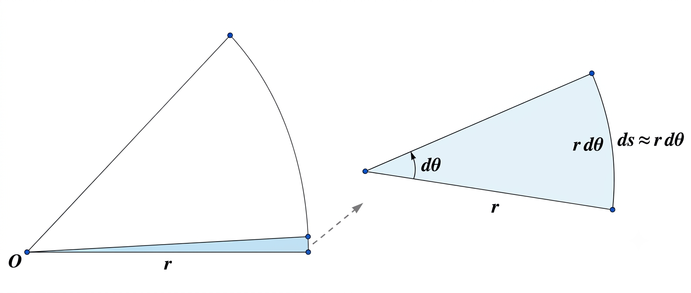
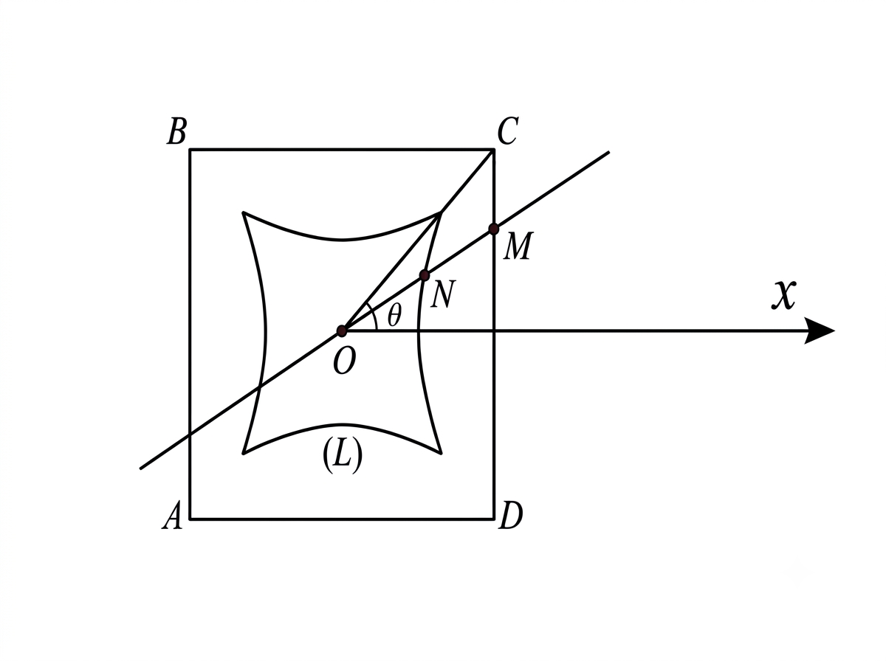
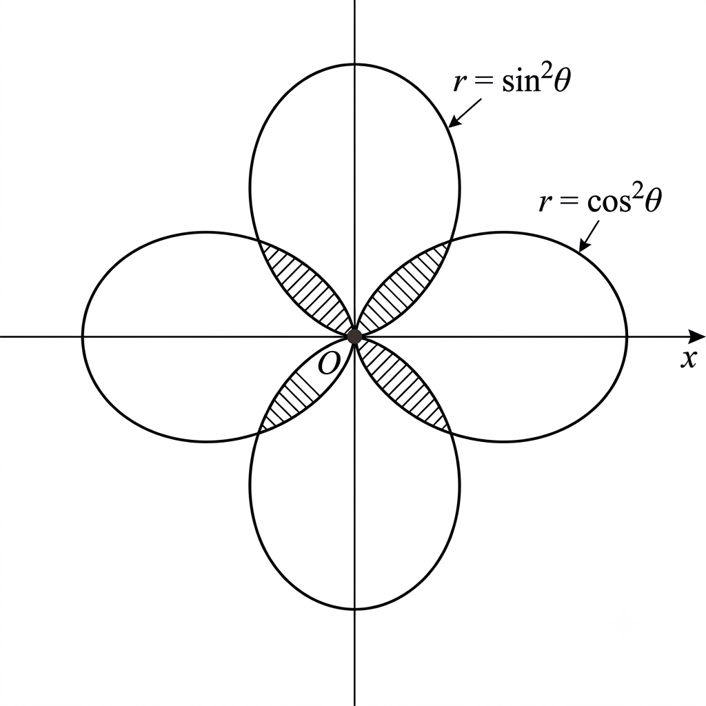

Kiến thức cần biết
- Lượng giác
- Hình học giải tích và hệ trục tọa độ chữ nhật (Descartes)
- Nguyên hàm tích phân

Trong lúc làm bài tập, tôi đã bắt gặp một bài toán thú vị. Ấn tượng đầu tiên khi đặt bút giải là: hệ tọa độ cực. Lí do rất đơn giản: tôi muốn tô màu. Quan sát tia OM cùng với tính đối xứng hình học của bài, trực giác bảo tôi rằng nó xoay một vòng và quét ra hình phẳng trên. Theo quan điểm của tôi, đó là cốt lõi của hệ tọa độ cực: phép xoay.
Tuy nhiên, việc biết đến và thật sự vận dụng được hệ tọa độ cực là khác nhau. Vì thế mà bài viết này ra đời, và mục tiêu cuối cùng mà nó muốn đạt được chính là đưa ra một lời giải đẹp cho bài toán trên.
Hệ tọa độ cực
Một cách tổng quát, một hệ trục tọa độ thực hiện duy nhất một nhiệm vụ: xác định vị trí của một điểm bằng các quan hệ của điểm tới các trục. Ví dụ như trong hệ Descartes, ta xác định một điểm bằng đường đi đến nó theo hai tia Ox và Oy. Còn với hệ tọa độ cực, ta xác định điểm bằng độ dài và một phép xoay.
Gần gũi nhất, bạn đọc hẳn đã biết về đường tròn lượng giác: Một đường tròn bán kính bằng 1, tâm nằm tại gốc tọa độ trong hệ Oxy và một điểm A là giao điểm của đường tròn với tia Ox.

Giả dụ như OA không còn bằng 1 nữa, ta xét đến một đường tròn tổng quát bán kính OA.
Xét điểm M(x, y) nằm trên đường tròn như hình vẽ. Ta có được $OM = OA$. Đặt $\alpha=\angle{AOM}$
Vận dụng các công thức lượng giác trong tam giác OAM với góc $\alpha$, ta có thể xác định tọa độ điểm M theo OM như sau: $$ \begin{align} \begin{cases} x = OM\cos\alpha \\ y = OM\sin\alpha \end{cases} \end{align} $$ Nói cách khác, ta xác định được điểm M trên đường tròn bằng độ dài bán kính và số đo góc giữa OM với đường chuẩn.
Đó cũng là phương pháp mà hệ tọa độ cực sử dụng: góc và bán kính. Về cơ bản, nếu coi cái ẩn sau hệ Descartes là lưới ô vuông, nền tảng của hệ tọa độ cực là vô hạn những đường tròn đồng tâm.
Hệ tọa độ cực
Hệ tọa độ cực là hệ trục tọa độ trong mặt phẳng, bao gồm một gốc cực O và một trục cực Ox, trong đó một điểm M được xác định bằng khoảng cách $r = OM$ và góc $\alpha=\angle{xOM}$, hay: M(r; $\alpha$). Ta quy ước: $M'(-r;\theta)$ là điểm đối xứng với $M(r;\theta)$ qua gốc tọa độ.

Một số vấn đề nền tảng với hệ tọa độ cực
a. Chuyển đổi giữa hệ Descartes và hệ cực.
Xét điểm $M(r; \theta)$ trong hệ tọa độ cực. Để tìm được tọa độ M tương ứng trong hệ Descartes, ta đơn giản là vẽ một đường tròn tâm O bán kính r và làm ngược lại quá trình suy ra công thức (1).
Công thức chuyển đổi giữa hệ Descartes và hệ tọa độ cực
Xét điểm $M(r;\theta)$ trong hệ tọa độ cực, tọa độ tương ứng $M(x;y)$ của điểm đó trong hệ Descartes là: $$ \begin{cases} x = r\cos\theta \\ y = r\sin\theta \end{cases}$$
b. Đường tròn tâm cực, tia và đường thẳng qua cực

Tia qua cực
$$\theta = \alpha \quad (r \ge 0)$$ với $\alpha$ là góc định hướng với trục cực.
Nếu cho phép $r$ nhận giá trị âm (theo quy ước $M'(-r;\theta)$ đối xứng với $M(r;\theta)$ qua cực), thì $\theta = \alpha$ biểu diễn toàn bộ đường thẳng qua cực.
Đường tròn tâm cực
$$r = R$$ với R là bán kính đường tròn
Ngắn gọn thật nhỉ? Đúng vậy, tuy nhiên đường tròn và đường thẳng không qua cực lại là một câu chuyện khác. Nhưng để giữ bài viết không lan man, tôi sẽ tránh giới thiệu và chứng minh chúng ở đây, thay vào đó, bạn đọc có thể xem qua Wikipedia.
c. Tích phân trong hệ cực
Diện tích hình phẳng trong hệ cực
$$ S = \int_a^b{\frac{1}{2}f^2(\theta)}d\theta $$
với S là diện tích hình được giới hạn bởi hai tia qua cực $\theta = a, \theta = b$ và đồ thị hàm số $r = f(\theta)$.
Ta đã biết, công thức tính diện tích của một hình quạt tròn là $S = \frac{1}{2}r^2\theta$ với $r$ là bán kính, $\theta$ là số đo góc ở tâm ứng với cung tròn.
Bây giờ, ta áp dụng cách tư duy tương tự như khái niệm tích phân đã biết: chia hình thành rất nhiều phần nhỏ. Trong hệ tọa độ Descartes, tích phân là tổng của rất nhiều hình chữ nhật nhỏ; còn trong hệ tọa độ cực, tích phân là tổng của vô số quạt tròn nhỏ, quét từ tia này sang tia khác.

Nếu diện tích mỗi hình chữ nhật nhỏ là $f(x)dx$, tức chiều cao nhân chiều rộng, thì diện tích mỗi quạt tròn nhỏ tương ứng là $$\frac{1}{2}f^2(\theta)d\theta$$Lời giải bài toán mở đầu
Đặt hình vào hệ tọa độ cực:

Vì tính đối xứng, ta chỉ cần tìm phần diện tích giới hạn bởi $(L)$ và hai tia $Ox, OC$ (rồi nhân lên 8).
Xét điểm $M(r; \theta) (r = OM)$ có tọa độ tương ứng trong hệ Descartes là $M(r\cos\theta; r\sin\theta)$
Vì $M\in CD$ với $CD: x = 4$ $$\begin{align*} \Rightarrow r\cos\theta &= 4 \\ \iff r &= \frac{4}{\cos \theta} \end{align*}$$ Ta lại có:
$$ \begin{cases} OM - ON = 2 \iff ON = OM - 2 \\ O, N, M \text{ thẳng hàng} \end{cases} \\ \Rightarrow N(r - 2;\theta) $$
Vậy diện tích phần giới hạn bởi $(L)$ và hai tia $OC: \theta = \frac{\pi}{4}$ và $Ox: \theta=0$ là: $$ S = \int_{0}^{\pi / 4}{\frac{1}{2}.\left( \frac{4}{\cos\theta}-2\right)^2}d\theta $$ Nên kết quả mà đề bài yêu cầu sẽ là: $$ 8^2-8S \ (\text{dm}^2) \approx 4384 \ (\text{cm}^2) $$
Kết luận
Kiến thức về hệ tọa độ cực thật ra còn rất rộng (và có vẻ ứng dụng chính là vào tích phân bội/tích phân lồng nhau). Tuy nhiên, với góc nhìn hạn hẹp, trình độ chưa cao và thời gian bỏ ra còn ít, tôi chỉ có thể khai thác một góc rất nhỏ này thôi. Rất khuyến khích các bạn đọc tự tìm tòi mở rộng, cũng như gửi email cho tôi nếu có điều gì tôi có thể làm cho bạn, hoặc cho bài viết này.
Đây là bài viết đầu tiên mà tôi thực sự quan tâm sâu sắc, cũng như dành thời gian nghiên cứu và viết bài (trong lĩnh vực Toán học). Mặc dù chắc chắn còn nhiều thiếu sót, đây cũng là một dấu mốc đáng nhớ trong cuộc đời tôi.
Phụ lục: Một số bài toán luyện tập
Bài toán 1
Đề bài: Có một bông hoa được giới hạn bởi hai hàm số $r=\sin^2\theta, r=\cos^2\theta$ trong hệ tọa độ cực. Hãy tính diện tích phần gạch chéo trong hình vẽ (làm tròn đến hàng phần chục nghìn).

Bài toán 2
Đề bài: Tính diện tích miền phẳng D được giới hạn bởi hệ điều kiện: $$ \begin{cases} 1 \leq xy \leq 4 \\ 1 \leq \frac{y}{x} \leq \sqrt{ 3 } \end{cases} $$ (làm tròn đến hàng phần trăm).
Lời giải
Bài toán 1:
Ta dễ dàng thấy được bốn cánh hoa là giống hệt nhau, nên chỉ cần tính diện tích một phần giao rồi nhân 4.
Xét điểm $M(\sin^2\theta; \theta)$ (trong hệ tọa độ cực) là giao điểm ở góc phần tư thứ nhất của hai hàm số. Ta có OM chia phần giao thành hai phần bằng nhau nên chỉ cần tính phần từ Ox đến OM rồi nhân 2. Ta có: $$\cos^2\theta = \sin^2\theta \implies \tan^2\theta = 1 \implies \theta = \frac{\pi}{4} \text{ (vì } \theta \in [0, \frac{\pi}{2}])$$ Nên $M\left( \frac{1}{2};\frac{\pi}{4} \right)$. Biên của đồ thị là hàm số $r = \sin^2\theta$, đường thẳng $Ox, OM$. Vì vậy: $$ S = \int_{0}^{\pi/4}{\frac{1}{2} \sin^4\theta}d\theta $$ Vậy diện tích cần tìm là $8S\approx0,1781$
Bài toán 2: Nhận thấy rằng điều kiện thứ hai: $$ \begin{align*} &1\leq \frac{y}{x} \leq \sqrt{3} \\ \iff & \begin{cases} x \leq y \leq x\sqrt{3} \quad (x \geq0) \\ x \geq y \geq x\sqrt{3} \quad (x < 0) \end{cases} \end{align*} $$ Tức miền phẳng giới hạn bởi đường này là hai đường thẳng đi qua gốc tọa độ: $y = x$ và $y = x\sqrt3$ (tương ứng với các tia nằm trong góc phần tư thứ nhất và thứ ba).
Ta xét bài toán trong hệ tọa độ cực. Hệ điều kiện tương đương: $$ \begin{align*} &\begin{cases} 1\leq xy\leq 4 \\ x \leq y \leq x\sqrt{ 3 } \end{cases} \\ \iff&\begin{cases} 1 \leq \frac{1}{2}r^2\sin 2\theta \leq 4 \\ \theta \in \left[ \frac{\pi}{4}; \frac{\pi}{3} \right] \cup\left[\frac{5\pi}{4}; \frac{4\pi}{3} \right] \end{cases} \end{align*} $$ Do tính đối xứng, ta chỉ cần tính diện tích trong góc phần tư thứ nhất ($\theta \in [\pi/4, \pi/3]$) rồi nhân đôi. Hình phẳng trong góc phần tư thứ nhất được giới hạn bởi các đường: $$ \begin{cases} \theta = \frac{\pi}{4} \\ \theta = \frac{\pi}{3} \\ \frac{1}{2} r^2\sin2\theta = 1 \iff r = \sqrt{\frac{2}{\sin2\theta}} \\ \frac{1}{2} r^2\sin2\theta = 4 \iff r = \sqrt{\frac{8}{\sin2\theta}} \end{cases} $$ Diện tích trong góc phần tư thứ nhất là: $$ S = \int_{\pi / 4}^{\pi/3}{\frac{1}{2}\left( \frac{8}{\sin2\theta} - \frac{2}{\sin2\theta} \right)} d\theta $$ Khi đó, diện tích cần tìm là: $2S \approx 1,65$.